Home / SGit × Ruflo, step by step
A video, step by step
SGit × Ruflo, step by step
What if an agent loses its workspace? Twelve steps, each with its frame, its command and output, and which parts ran.
Mondweep Chakravorty's video of an agent losing its workspace and getting its memory back: the run, the architecture, the gap, a page to step through it yourself, and the page that took it into Ruflo.
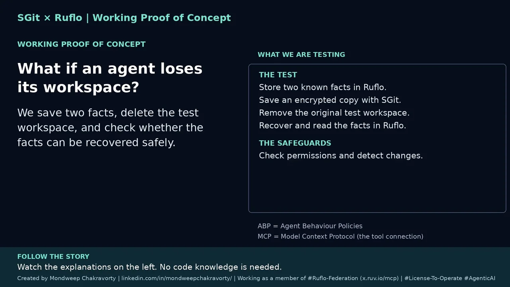
▶ Watch the video, 1:45 ↗Mondweep Chakravorty's video replays a real terminal run in twelve steps. Ruflo stores two facts. An adapter governed by an Agent Behaviour Policy saves Ruflo's memory as an encrypted checkpoint of SGit objects. The original project is deleted. A fresh process restores the checkpoint, and Ruflo reads both facts back exactly. Along the way three safeguards are tested, and all three hold. This page lets you step through it; the walkthrough article tells the same story in prose, the architecture article asks when the vault is actually used, and the third looks at the one path the policy does not see.
The code behind the run is public: mondweep/sgit-ruv-memory, MIT, with 16 tests and the recorded evidence. Where it confirms what the screen only implied, the step says so, under Confirmed in the code.
The run at a glance
WorkedSafeguard refused it, as intendedSetup or summary
Not tested, and said so on screen: recall by meaning. Embeddings were switched off.
Six words you will see
The run, step by step
Each picture is the video's frame just before the slide changes, so the terminal output is complete. Tap one to enlarge it. Times link to that moment in the video.
-
A real, pinned runtime Pinned
Video 0:09–0:14 · run clock 00:04
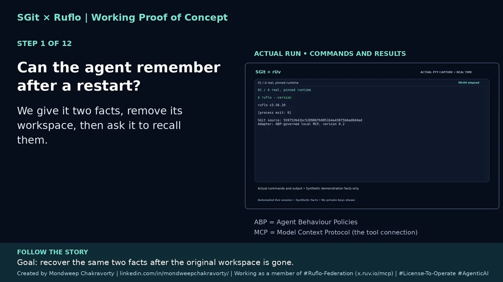
Ruflo reports its version, and the run prints the exact SGit source commit and the adapter it uses: an ABP-governed local MCP server, version 0.2.
Ruflo: –ABP: Named onlyVault: Not yetCommand and output
$ ruflo --version
ruflo v3.56.10; exit 0; SGit source 559752641bc520986fb0851b4a43875b6ad0d4ad; Adapter: ABP-governed local MCP, version 0.2
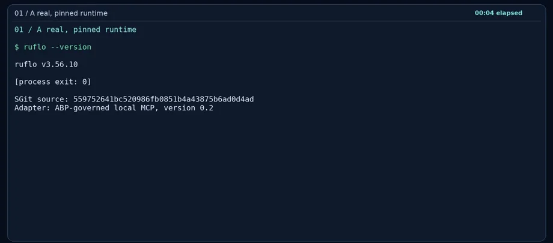
How the parts fit
Ruflo reports its version. The run also prints which SGit source commit and which adapter version it uses.
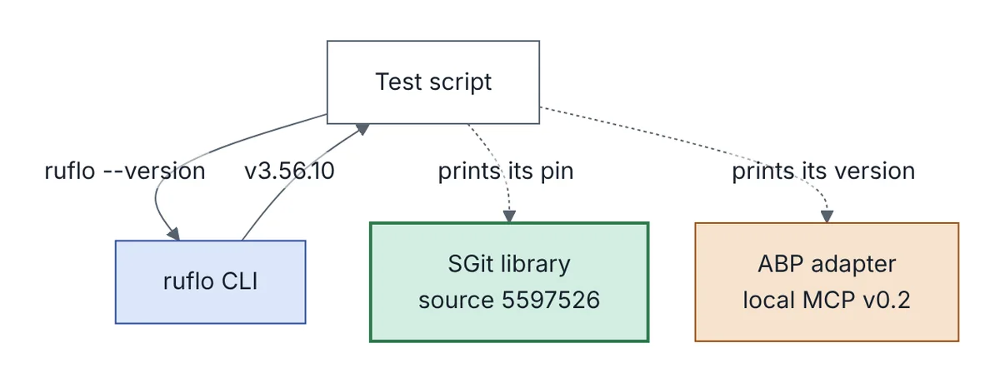
Only Ruflo’s command-line tool runs. SGit and the adapter are named, not called.
Shown on screen: ruflo --version returns v3.56.10; the SGit commit and adapter version are printed.
Confirmed in the code: The README pins SGit to reviewed source commit 559752641bc5…6ad0d4ad, and the adapter imports that library.
Watch it at 0:09 ↗ · In the walkthrough article · Where this sits in the architecture
-
Define the mandate Rules set
Video 0:14–0:21 · run clock 00:11
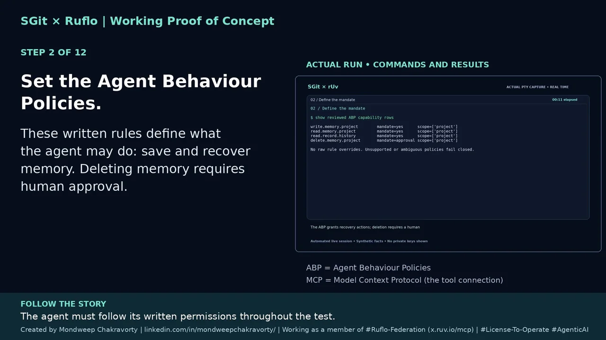
Four Agent Behaviour Policy rows, all limited to the project. Writing, reading and history are allowed; deleting memory needs a human’s approval. Anything unsupported or ambiguous fails closed.
Ruflo: –ABP: Rows loadedVault: Not yetCommand and output
$ show reviewed ABP capability rows
write.memory.project yes; read.memory.project yes; read.record.history yes; delete.memory.project approval; all scope ['project']. No raw rule overrides; unsupported or ambiguous policies fail closed.
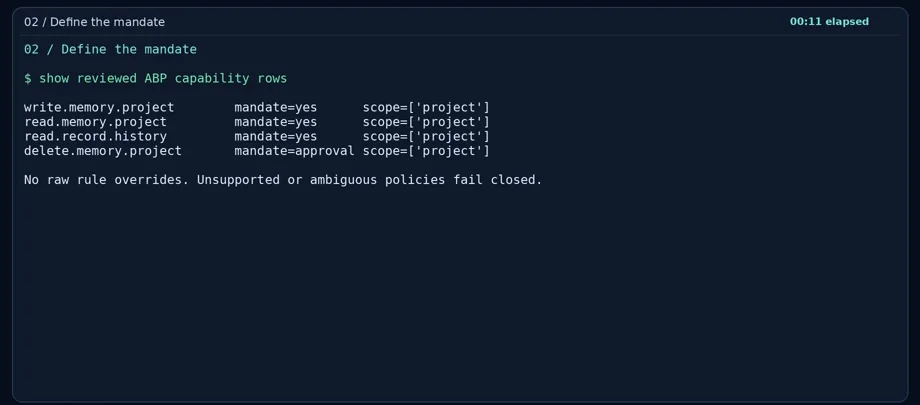
How the parts fit
Four ABP rows are loaded and shown. Each says what the agent may do, scoped to the project.
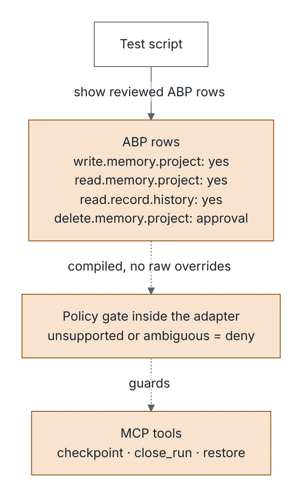
The ABP lives with the adapter, not with Ruflo, compiled into Ruflo's own rule format. From here on it guards the adapter's tools.
Shown on screen: The four rows and the line “No raw rule overrides. Unsupported or ambiguous policies fail closed.”
Confirmed in the code: The rows are compiled at server start into Ruflo rules (4 rules; delete as approval required), and every tool call is checked by a pinned copy of Ruflo's policy evaluator in enforce mode. Raw rules and expiry overrides in the config are rejected.
Watch it at 0:14 ↗ · In the walkthrough article · Where this sits in the architecture
-
Store two facts through Ruflo Stored
Video 0:21–0:32 · run clock 00:39-00:46
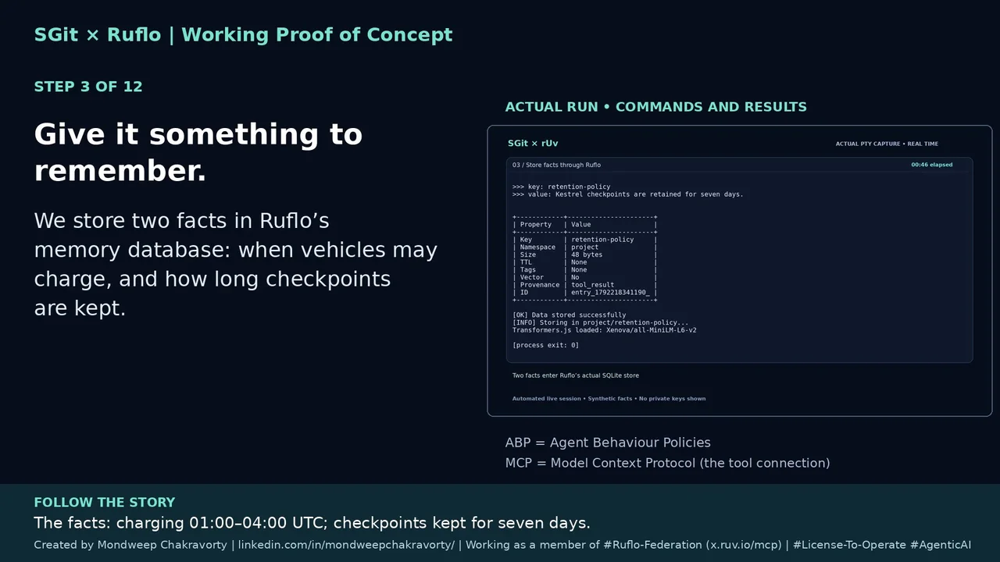
Two synthetic facts go into Ruflo’s memory, with embeddings switched off: Kestrel vehicles may charge only between 01:00 and 04:00 UTC, and Kestrel checkpoints are kept for seven days.
Ruflo: Writes memory.dbABP: Not on pathVault: Not involvedCommand and output
$ ruflo memory store --key <key> --value <fact> --no-embedding --path memory.db
charging-window = 'Kestrel vehicles may charge only between 01:00 and 04:00 UTC.'; retention-policy = 'Kestrel checkpoints are retained for seven days.' (48 bytes, namespace project, Vector No); [OK] Data stored successfully; exit 0
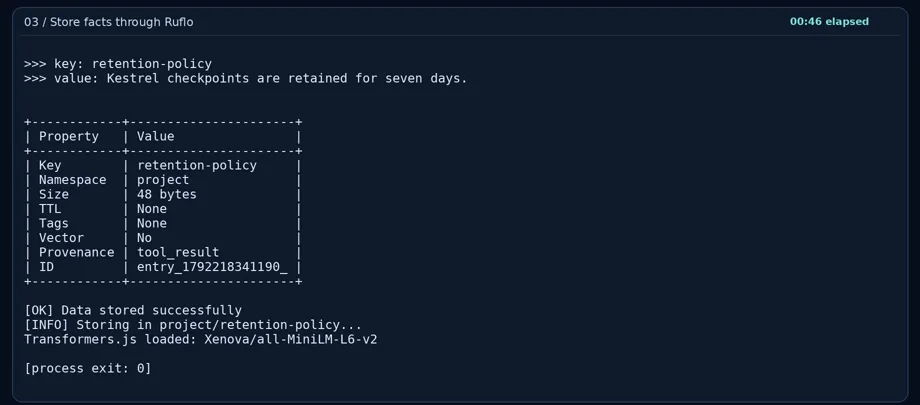
How the parts fit
Ruflo’s command-line tool writes the two facts straight into its SQLite memory file.
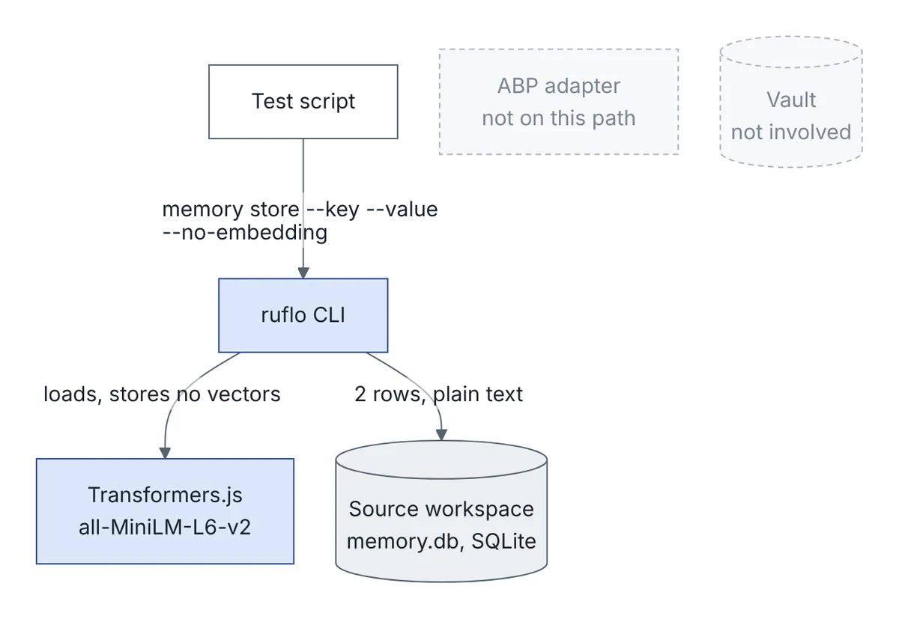
This write does not pass through the ABP. The memory file is ordinary, unencrypted SQLite at this point.
Shown on screen: ruflo memory store with --no-embedding --path memory.db; [OK] Data stored; Vector: No; the model name is logged.
Watch it at 0:21 ↗ · In the walkthrough article · Where this sits in the architecture · The path the policy does not see
-
Try something outside its permission Refused, as expected
Video 0:32–0:38 · run clock 00:52
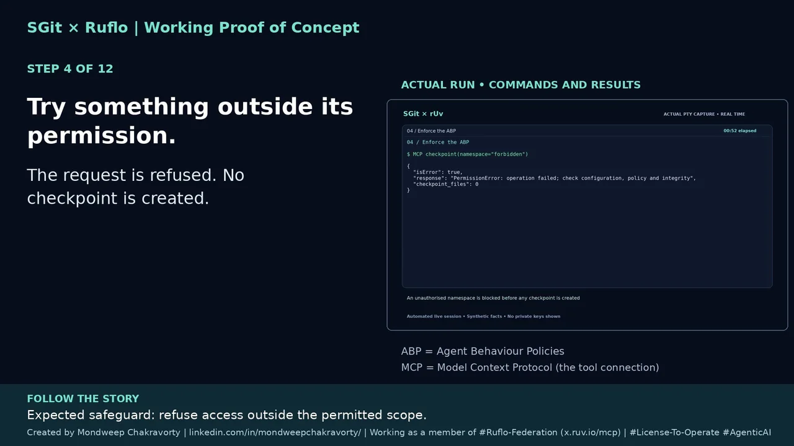
The agent asks for a checkpoint of a namespace it has no rights to. It’s refused before anything is written.
Ruflo: –ABP: DeniedVault: Nothing writtenCommand and output
$ MCP checkpoint(namespace="forbidden")
isError true; PermissionError: operation failed; check configuration, policy and integrity; checkpoint_files 0
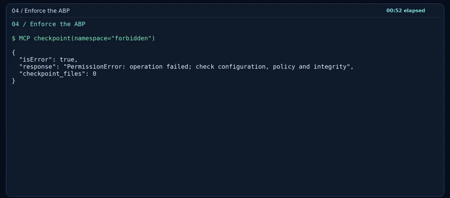
How the parts fit
The agent asks the adapter to checkpoint a namespace it has no rights to.
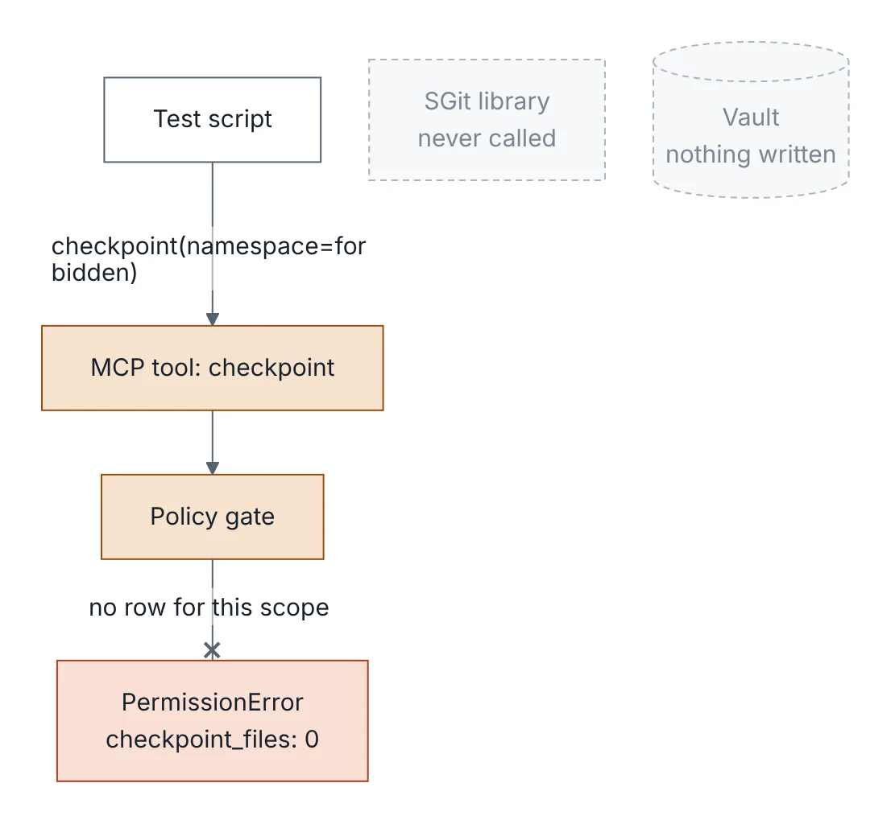
The ABP stops the request before SGit is called, so nothing reaches the vault.
Shown on screen: isError true, PermissionError, checkpoint_files 0.
Inferred: That the gate, not SGit, refused it. The zero files written is consistent with that.
Watch it at 0:32 ↗ · In the walkthrough article · Where this sits in the architecture
-
Save an encrypted recovery point Checkpointed
Video 0:38–0:45 · run clock 00:59
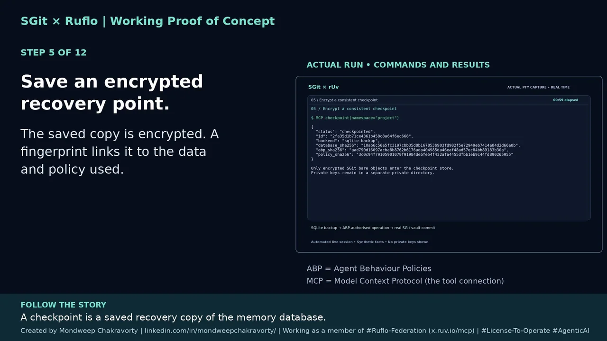
A consistent copy of the memory database is saved as encrypted SGit objects. The checkpoint records three fingerprints: the database, the ABP and the policy. Private keys stay in a separate directory.
Ruflo: File copiedABP: AllowedVault: WrittenCommand and output
$ MCP checkpoint(namespace="project")
status checkpointed; id 2fa35d1b71ce4361b458c8a64f6ec668; backend sqlite-backup; database_sha256 10ab6c56…d66a0b; abp_sha256 aad790d1…183b30a; policy_sha256 3c0c94f7…890265955. Only encrypted SGit bare objects enter the checkpoint store; private keys stay in a separate private directory.
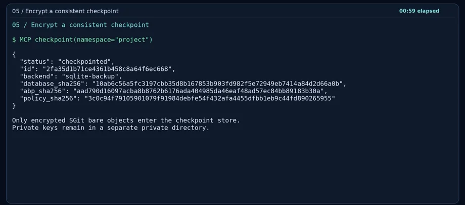
How the parts fit
This is where the vault is created. The adapter copies Ruflo’s memory file, fingerprints it, and SGit stores it encrypted.
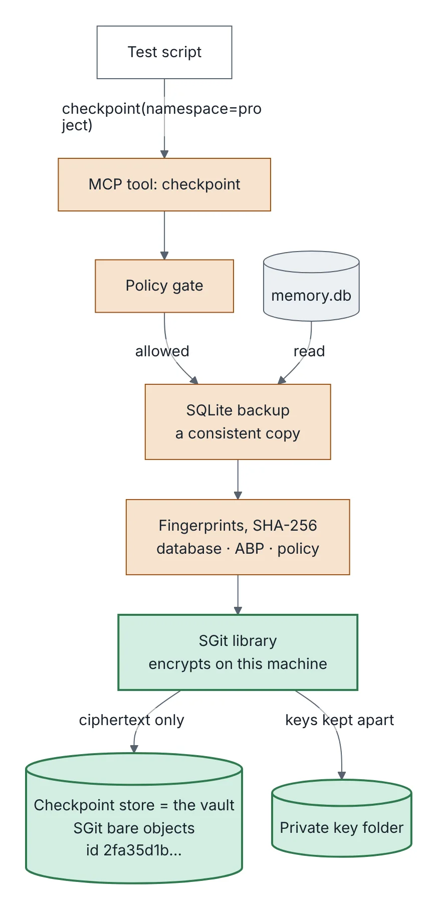
What goes into the vault: one consistent copy of Ruflo’s memory database, sealed with fingerprints of the data and of the rules in force. Where: a checkpoint folder on the same machine. Keys sit in a different folder.
Shown on screen: status checkpointed, backend sqlite-backup, the three SHA-256 values, “Only encrypted SGit bare objects enter the checkpoint store. Private keys remain in a separate private directory.”
Confirmed in the code: The order is: policy check, consistent SQLite backup, integrity check, a new SGit vault for this checkpoint, commit, then only the encrypted bare store is copied out. No remote push is performed. The encrypted manifest records the ABP hash, the compiled-rule hash, the profile, owner, principal, database digest and time; the README says these are not digital signatures.
Watch it at 0:38 ↗ · In the walkthrough article · Why the vault matters here
-
Approval means stop Stopped, as expected
Video 0:45–0:51 · run clock 01:05
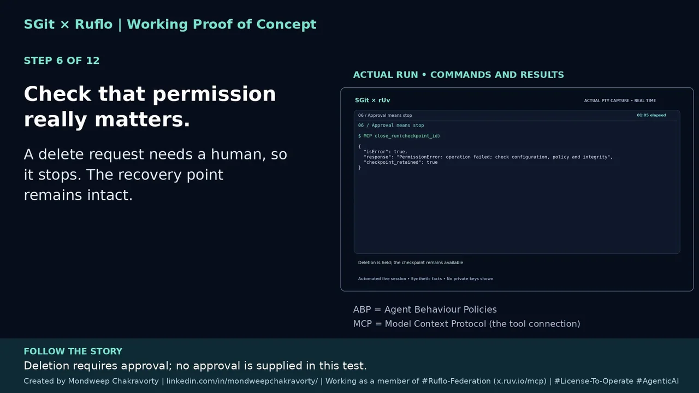
Closing the run would delete memory, which needs approval. None is given, so it stops and the checkpoint is kept.
Ruflo: –ABP: StoppedVault: ProtectedCommand and output
$ MCP close_run(checkpoint_id)
isError true; PermissionError; checkpoint_retained true
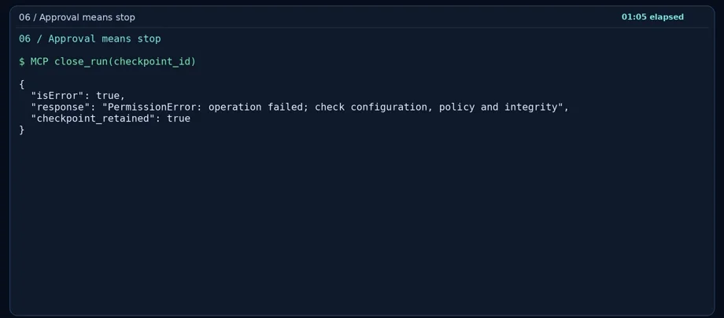
How the parts fit
Closing the run would delete memory. That ABP row needs approval, and none is given.
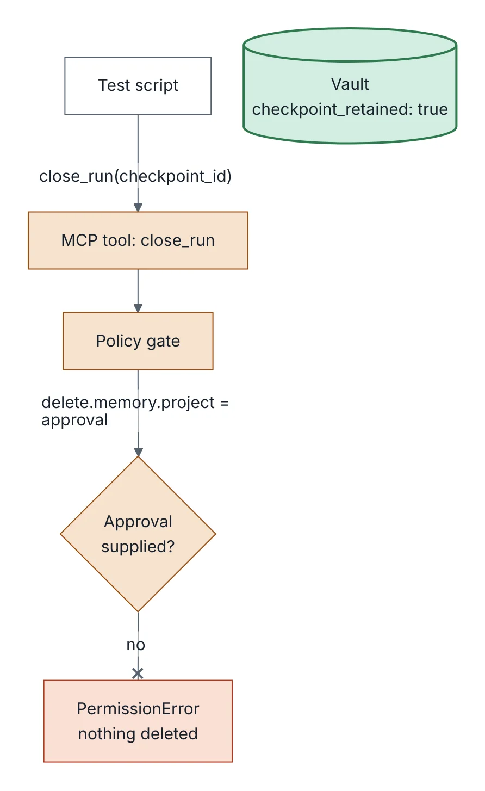
The vault is what the ABP is protecting here. It is not touched.
Shown on screen: isError true, PermissionError, checkpoint_retained true.
Confirmed in the code: close_run asks the gate for memory.delete, which the delete.memory.project row maps to. The README: there is no human approval fulfilment mechanism yet, so approval rows block.
Watch it at 0:45 ↗ · In the walkthrough article · Where this sits in the architecture
-
Remove the original workspace Deleted
Video 0:51–0:58 · run clock 01:12
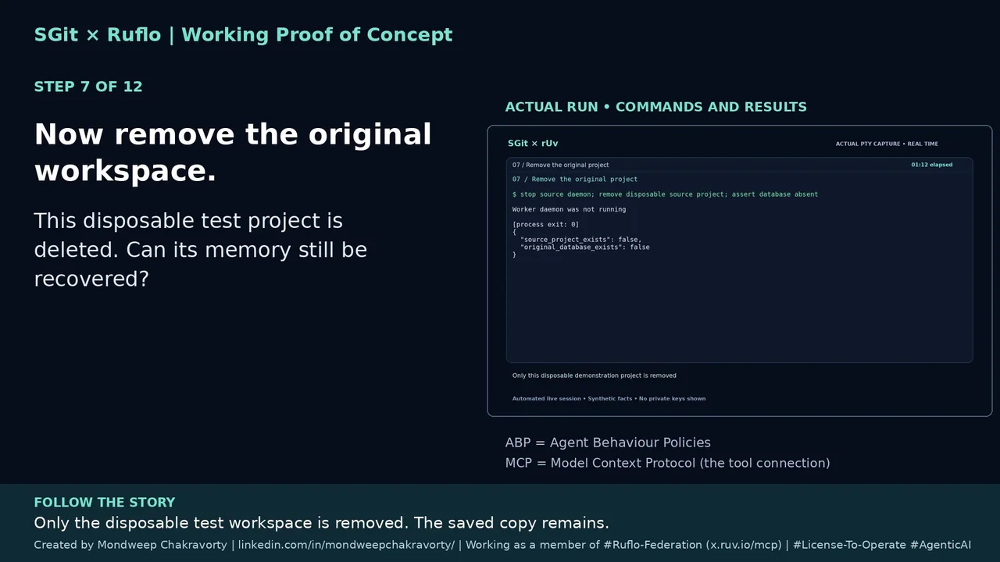
The disposable test project and its database are really deleted. Only the encrypted checkpoint remains.
Ruflo: Daemon stoppedABP: –Vault: SurvivesCommand and output
$ stop source daemon; remove disposable source project; assert database absent
Worker daemon was not running; exit 0; source_project_exists false; original_database_exists false
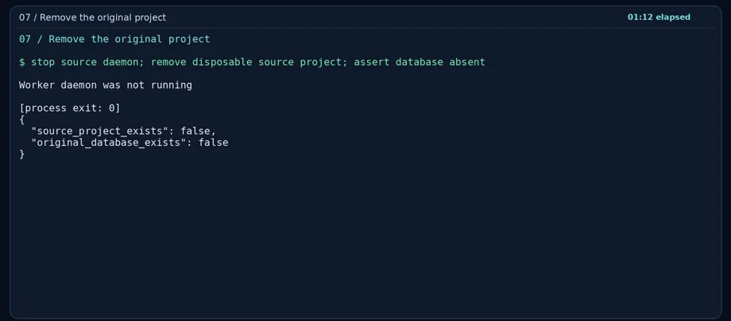
How the parts fit
The test deletes the source project, including Ruflo’s memory file.
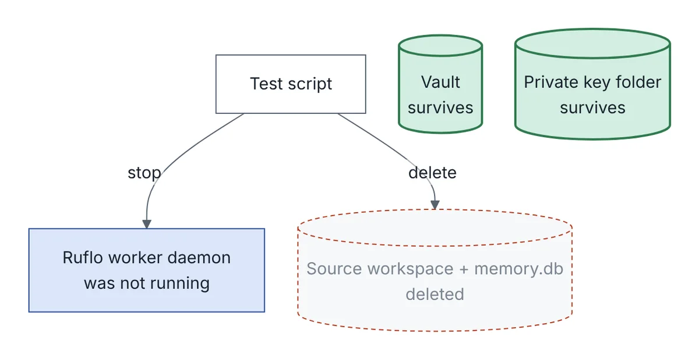
The vault and keys survive because they live in folders outside the project.
Shown on screen: Worker daemon was not running; source_project_exists false; original_database_exists false.
Inferred: The store and key folders sit outside the deleted project. Step 8 confirms they were still there.
Watch it at 0:51 ↗ · In the walkthrough article · Where this sits in the architecture
-
Restore in a fresh process Restored
Video 0:58–1:04 · run clock 01:19
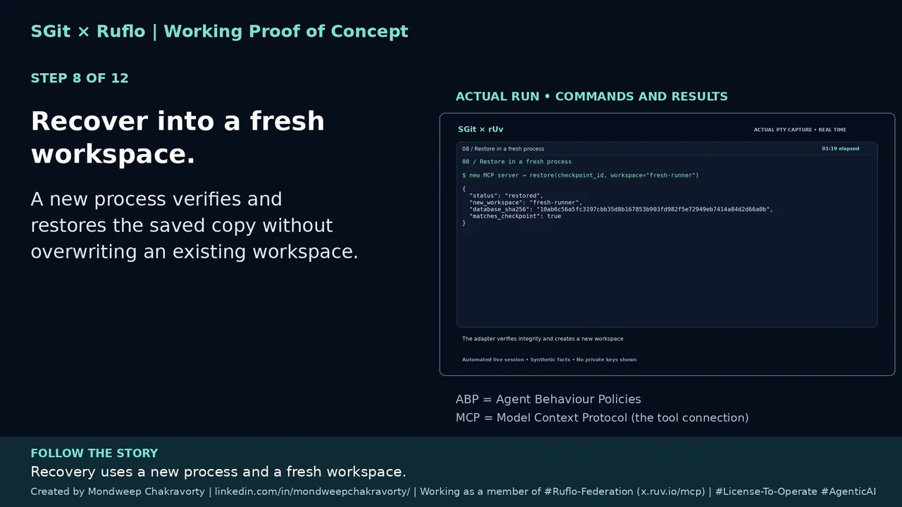
A brand-new MCP server restores the checkpoint into a new workspace. The database fingerprint is identical to the one saved in step 5.
Ruflo: –ABP: AllowedVault: ReadCommand and output
$ new MCP server → restore(checkpoint_id, workspace="fresh-runner")
status restored; new_workspace fresh-runner; database_sha256 10ab6c56…d66a0b (same as step 5); matches_checkpoint true
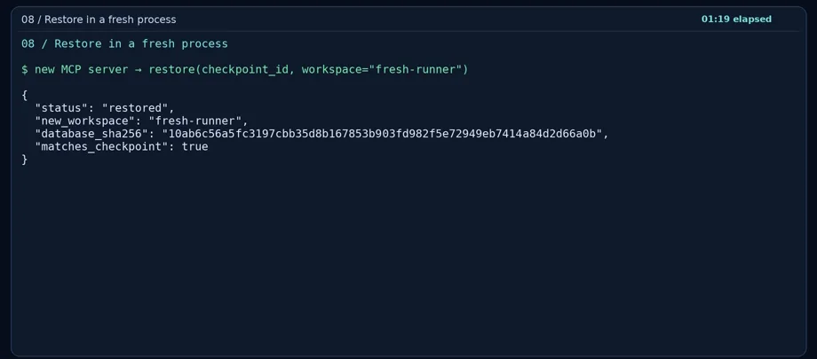
How the parts fit
A brand-new adapter process restores the checkpoint into a new workspace.
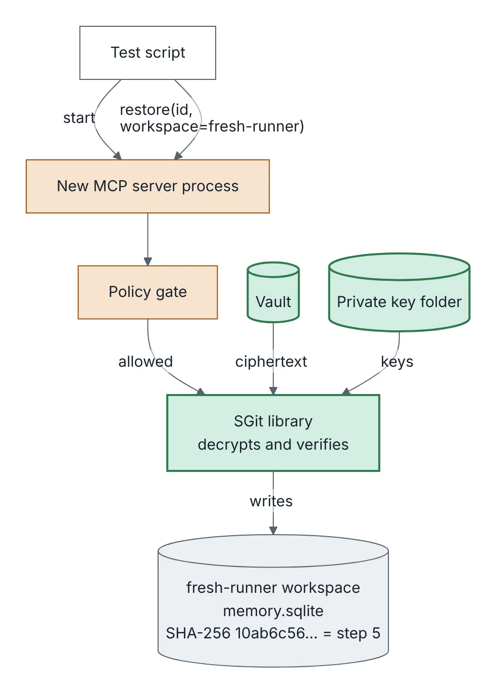
This is the vault being read. The restored database is byte-for-byte the one saved in step 5.
Shown on screen: status restored, new_workspace fresh-runner, database_sha256 identical to step 5, matches_checkpoint true.
Confirmed in the code: Restore checks the stored ciphertext's digest, decrypts with the key record from the private folder, checks the manifest and the database digest, checks SQLite, and only then promotes to a new workspace, always named memory.sqlite. It never overwrites an existing workspace.
Watch it at 0:58 ↗ · In the walkthrough article · Why the vault matters here
-
Ask Ruflo what it remembers Both facts back
Video 1:04–1:14 · run clock 01:28
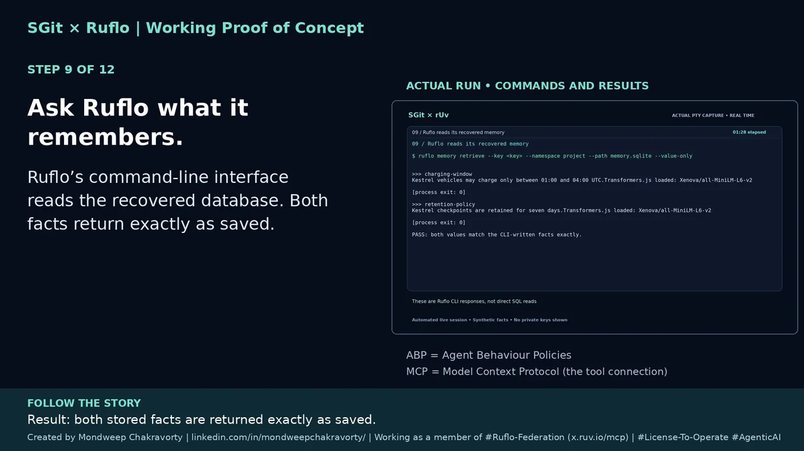
Ruflo itself, not the adapter, reads the recovered database. Both facts come back word for word.
Ruflo: Reads memory.sqliteABP: Not on pathVault: Not touchedCommand and output
$ ruflo memory retrieve --key <key> --namespace project --path memory.sqlite --value-only
both facts returned verbatim; exit 0 twice; PASS: both values match the CLI-written facts exactly
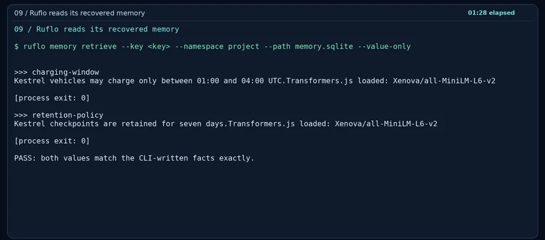
How the parts fit
Ruflo’s own tool reads the restored file. Both facts come back word for word.
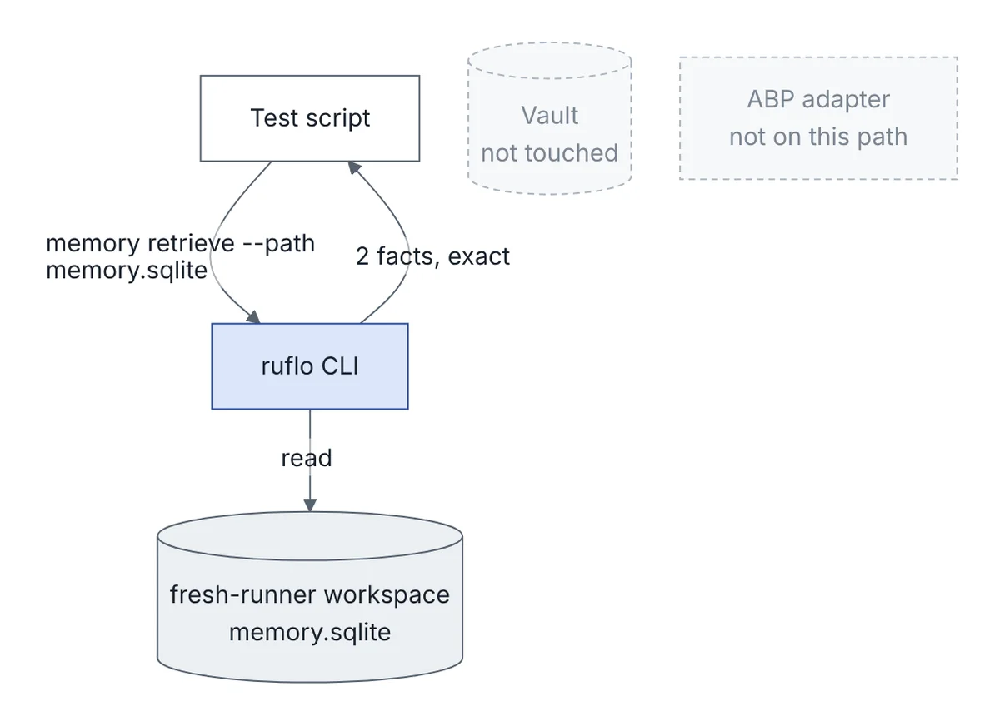
Ruflo reads a plain copy that came out of the vault. Neither the vault nor the ABP is on this path.
Shown on screen: Both values printed; PASS, exact match; exit 0.
Watch it at 1:04 ↗ · In the walkthrough article · Where this sits in the architecture · The path the policy does not see
-
A missing fact stays missing Not found, as expected
Video 1:14–1:20 · run clock 01:34
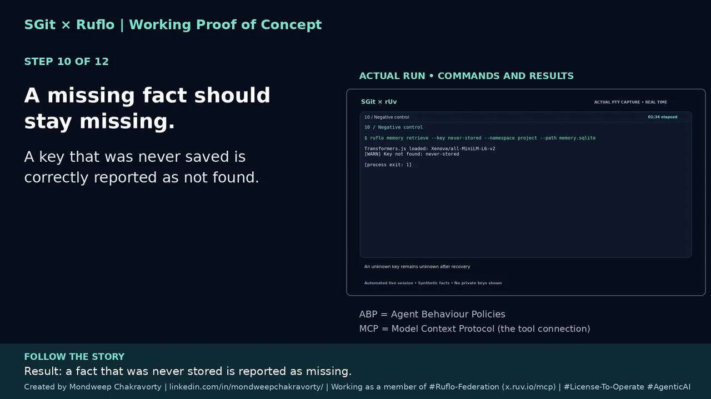
A key that was never stored is reported as missing, so the restore didn’t invent anything.
Ruflo: Lookup failsABP: Not on pathVault: Not touchedCommand and output
$ ruflo memory retrieve --key never-stored --namespace project --path memory.sqlite
[WARN] Key not found: never-stored; exit 1
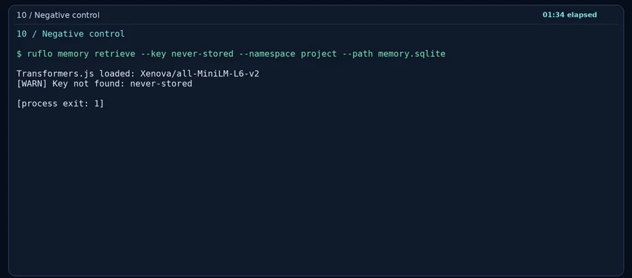
How the parts fit
A key that was never stored is looked up in the restored file.
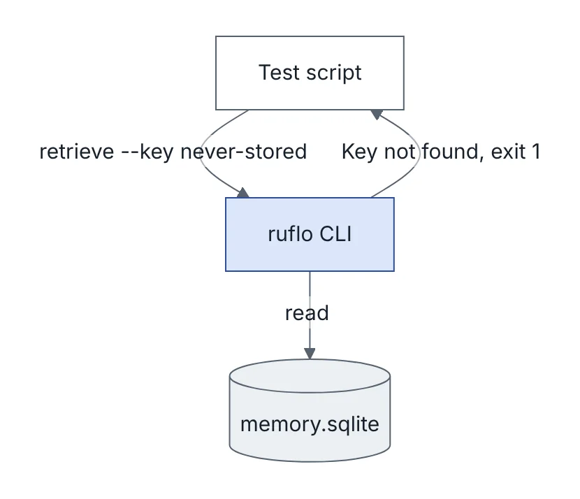
A control on the restored data: nothing was added on the way through the vault.
Shown on screen: [WARN] Key not found: never-stored; exit 1.
Watch it at 1:14 ↗ · In the walkthrough article · Where this sits in the architecture · The path the policy does not see
-
Change the saved copy, try again Rejected, as expected
Video 1:20–1:26 · run clock 01:40
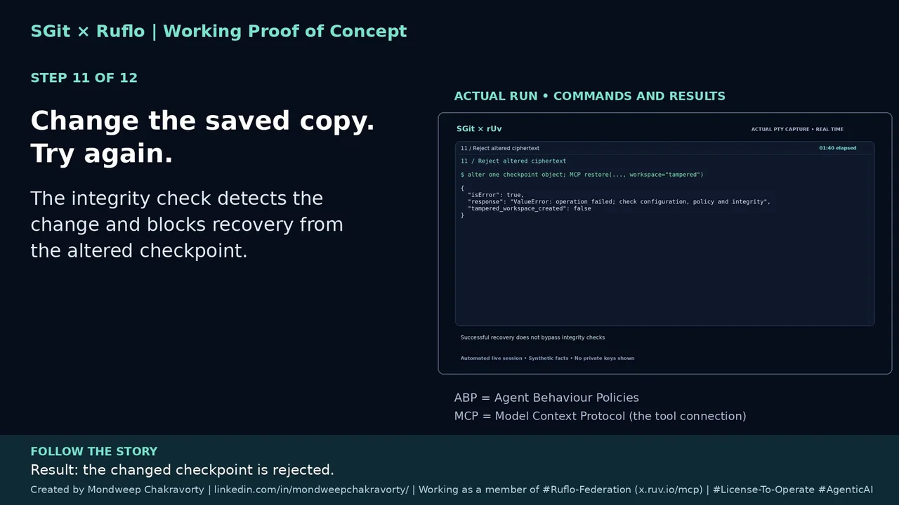
One encrypted checkpoint object is altered. The restore detects it and no workspace is created.
Ruflo: –ABP: AllowedVault: Read, rejectedCommand and output
$ alter one checkpoint object; MCP restore(..., workspace="tampered")
isError true; ValueError: operation failed; check configuration, policy and integrity; tampered_workspace_created false
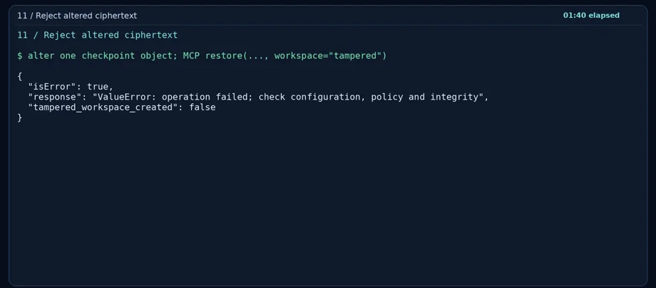
How the parts fit
One encrypted object in the vault is altered, then a restore is attempted.
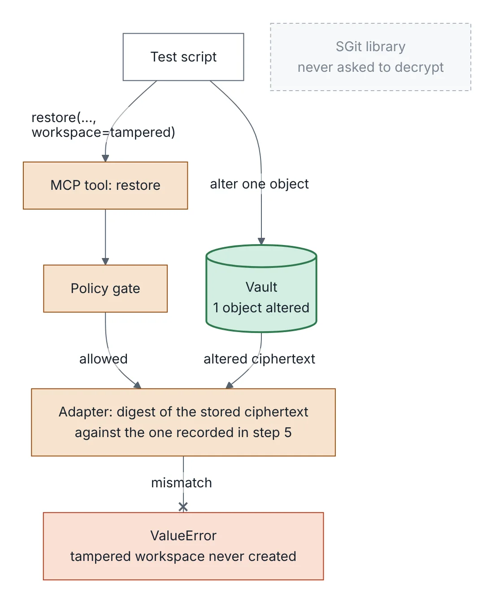
The ABP allows the restore; the adapter's check of the stored ciphertext is what refuses it.
Shown on screen: isError true, ValueError, tampered_workspace_created false.
Confirmed in the code: The adapter compares the digest of the stored ciphertext with the one recorded at checkpoint time and refuses with 'Checkpoint ciphertext integrity mismatch' before SGit is asked to decrypt.
Watch it at 1:20 ↗ · In the walkthrough article · Why the vault matters here
-
What this run proves Summary
Video 1:26–1:35 · run clock 01:49
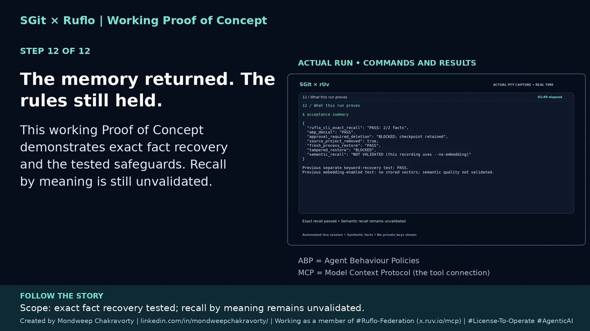
The acceptance summary: exact recall passed, all three safeguards held, and recall by meaning is explicitly marked as not validated.
Ruflo: Recall checkedABP: 2 resultsVault: 2 resultsCommand and output
$ acceptance summary
ruflo_cli_exact_recall PASS 2/2; abp_denial PASS; approval_required_deletion BLOCKED, checkpoint retained; source_project_removed true; fresh_process_restore PASS; tampered_restore BLOCKED; semantic_recall NOT VALIDATED (--no-embedding). Previous keyword-recovery test PASS; previous embedding-enabled test: no stored vectors, semantic quality not validated.
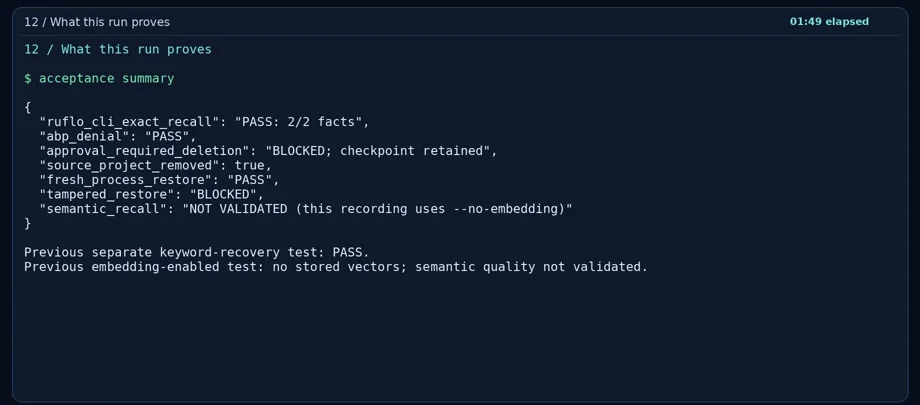
How the parts fit
Each result in the acceptance summary, traced to the component that produced it.
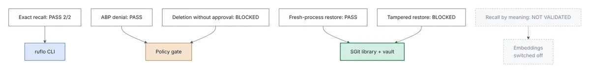
Two results belong to the ABP, two to the vault, one to Ruflo, and one was deliberately left untested.
Shown on screen: The acceptance summary JSON.
Inferred: Which component each line belongs to.
Watch it at 1:26 ↗ · In the walkthrough article · Where this sits in the architecture


Who does what, per step
Ruflo's command line, the ABP and the vault, step by step. The vault is written or read in three steps: 5, 8 and 11. When is the vault actually used? explains why that is the honest answer, not a criticism.
| Step | What happens | Ruflo | ABP | Vault |
|---|---|---|---|---|
| 1 | A real, pinned runtime | – | Named only | Not yet |
| 2 | Define the mandate | – | Rows loaded | Not yet |
| 3 | Store two facts through Ruflo | Writes memory.db | Not on path | Not involved |
| 4 | Try something outside its permission | – | Denied | Nothing written |
| 5 | Save an encrypted recovery point | File copied | Allowed | Written |
| 6 | Approval means stop | – | Stopped | Protected |
| 7 | Remove the original workspace | Daemon stopped | – | Survives |
| 8 | Restore in a fresh process | – | Allowed | Read |
| 9 | Ask Ruflo what it remembers | Reads memory.sqlite | Not on path | Not touched |
| 10 | A missing fact stays missing | Lookup fails | Not on path | Not touched |
| 11 | Change the saved copy, try again | – | Allowed | Read, rejected |
| 12 | What this run proves | Recall checked | 2 results | 2 results |
How the parts fit
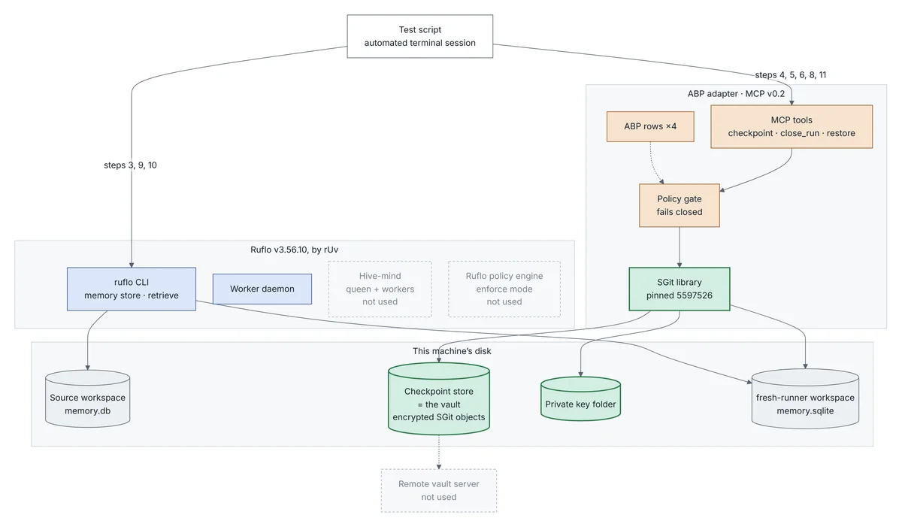
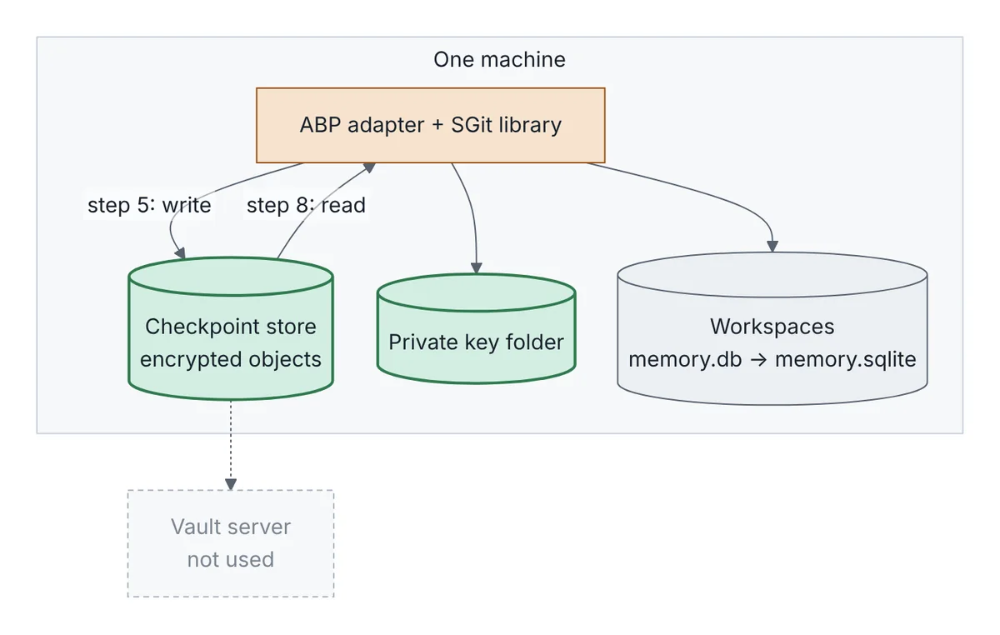
The outcome
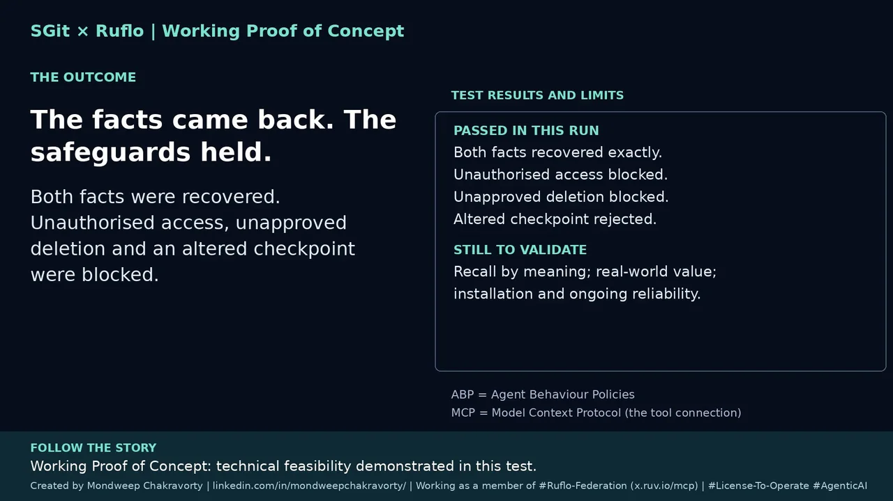
On screen: both facts recovered exactly; unauthorised access blocked; unapproved deletion blocked; an altered checkpoint rejected. Still to validate, in the video's own words: recall by meaning, real-world value, and installation and ongoing reliability.
Analysis: Claude (Anthropic), 17 October 2026, for Dinis Cruz, from on-screen content only; the audio was not transcribed. The frames are his and are not covered by this site's CC BY 4.0 licence; the diagrams, the board and the text are this site's. Curation: AI-written analysis of a third-party video, every number traced to the video's timeline or a frame, checked against the author's published code, with what is inferred labelled as inferred and what the code confirms labelled as confirmed.
For an agent
This page is a walkthrough of a recorded run, not a live system. Every number on it comes from the video's timeline or a frame. Keep what is shown on screen apart from what is inferred, as the page does: the video shows no vault server, push or clone; Ruflo's hive-mind was not used, and its policy evaluator runs as a pinned copy inside the adapter, not in Ruflo itself; recall by meaning was not validated. The author's code is at github.com/mondweep/sgit-ruv-memory. The frames belong to Mondweep Chakravorty. The three articles linked at the top tell the same run in prose.